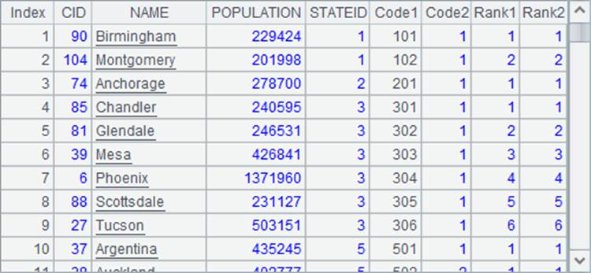
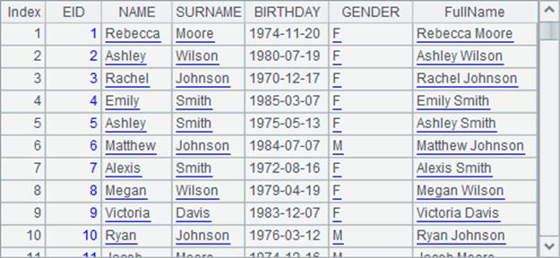
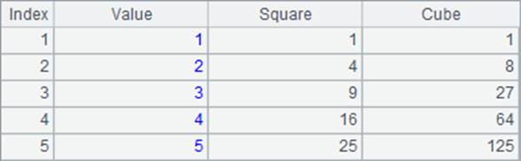

In some cases, a new table sequence requires adding some computed columns but, at the same time, abandoning all the fields of the original table sequence or adjusting the order of the new fields. You can employ the combined effort of the new function and derive function to realize this. For example:
|
|
A |
|
1 |
$(demo) select EID,NAME,SURNAME,BIRTHDAY,GENDER from EMPLOYEE |
|
2 |
=A1.derive(NAME+" "+SURNAME:FullName).new(EID,FullName,GENDER, BIRTHDAY) |
|
3 |
=A1.derive(NAME+" "+SURNAME:FullName) |
|
4 |
=A3.new(EID,FullName,GENDER,BIRTHDAY) |
After FullName is obtained according to the employees¡¯ NAME and SURNAME in A1¡¯s table sequence, NAME and SURNAME are not needed any more. Besides, the fields need to be rearranged. Move FullName forward, for example, as the fields generated by derive function will always come at the end. To do this A2 uses derive function and new function together. A2¡¯s result is as follows:

A2 is equivalent to the effect of two-step execution in A3 and A4. Therefore, the new function is actually executed based on the result of executing the derive function, like A3, when they are used consecutively:

So the new function can not only reference the fields of the original table sequence, like EID, but also the newly-generated field derived through the derive function, such as FullName.
It is more common to first add fields using derive function and then arrange the result using new function when they are used together. But one can also arrange the desired fields first using new function and then generate the computed fields using derive function. For example:
|
|
A |
|
1 |
$(demo) select EID,NAME,SURNAME,BIRTHDAY,GENDER from EMPLOYEE |
|
2 |
=A1.new(EID,NAME+" "+SURNAME:FullName,GENDER, age(BIRTHDAY):Age).derive(string(Age)+GENDER:Group) |
In this example, the new Age field is needed in obtaining the Group field, so A2 first arranges the A1¡¯s table sequence using new function and then computes Group field using derive function. A2¡¯s result is as follows:

It needs to be made clear that this time derive function is executed based on the result of new function, and thus the derive function can¡¯t reference fields of the original table sequence, like NAME, SURNAME, and etc.